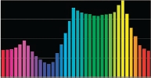

Hue 色调/色相
Saturation 饱合度
Brightness 明亮度/明度/亮度

同一照明度下多种颜色的相对亮度不一（黄色的亮度几乎是蓝色的4倍）
可读性的最佳组合是白底黑字
黑字白底的可读性也不错
白底上的明亮颜色像黄色会消失看不清
白底上的暗颜色像蓝色或红色效果较佳
渐变背景极易制造可读性问题，是因为部份文字将因较弱的对比使可读性降低。若非用渐变背景不可，请使用黑色字，并不要在背景使用暗色
有些许红绿色盲的10%男性读者，会觉得此段落很难读，特别是红色和绿色的明亮度很接近的状况。不要在文本上单靠颜色来产生对比。